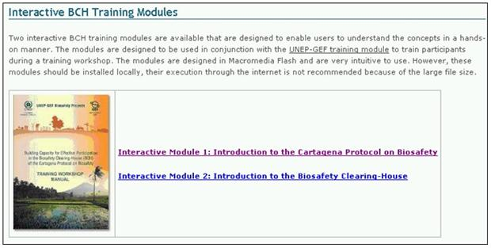

Los Módulos de Entrenamiento del CIISB se desarrollaron en el marco del proyecto PNUMA-FMAM CIISB, en colaboración con el Instituto de las Naciones Unidas para Formación Profesional e Investigaciones (UNITAR) y la Secretaría del Convenio sobre diversidad Biológica (SCDB). El contenido fue proporcionado y revisado por expertos acreditados en el mundo sobre este campo.
Figura 59
Los Módulos de Entrenamiento se presentan en tres formatos:
1. Módulos de Entrenamiento del CIISB;
2. Módulos Interactivos de Entrenamiento del CIISB; y
3. El Manual de Talleres de Entrenamiento del PNUMA-FMAM.
Los Módulos de Entrenamiento del CIISB comprenden una serie de cinco módulos que proporcionan una introducción a:
1. El Protocolo de Cartagena sobre Seguridad en la Biotecnología;
2. El Centro de Intercambio de Información sobre Seguridad en la Biotecnología (CIISB);
3. El Portal Central del CIISB;
4. Navegación en el Portal Central del CIISB; y
5. Registro de datos en el Portal Central del CIISB
Los Módulos Interactivos de Entrenamiento son diseñados para ser utilizados junto con el manual de formación de PNUM-GEF con el fin de entrenar a los participantes de los talleres.

Figura 60
El Manual de Talleres de Entrenamiento del PNUMA-FMAM es diseñado para proporcionar a los entrenadores una visión global de todos los procesos de entrenamiento y una comprensión detallada de las áreas que deben ser cubiertas durante el acompañamiento de un taller de entrenamiento sobre el CIISB. El módulo completo del taller de entrenamiento en línea proporciona directivas sobre la gestión del programa de formación del CIISB.